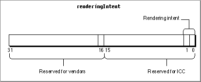

Legacy Document
Important: The information in this document is obsolete and should not be used for new development.
Important: The information in this document is obsolete and should not be used for new development.


Rendering Intent Values for Version 2.x Profiles
The ColorSync Manager defines the CM2Header structure (page 3-43) to represent the profile header for the version 2.x profile format defined by the ICC. The renderingIntent field of the CM2Header structure is an unsigned long value whose bits specify information about a profile. The ICC reserves the use of bits 0 to 15 and has assigned values to bits 0 and 1. Bits 16 to 31 are reserved for use by color management system (CMS) vendors. Figure 2-3 shows the bit assignments of the renderingIntent field specified by the ICC.Rendering intent controls the approach a CMM uses to translate the colors of an image to the color gamut of a destination device. Your application can set a profile's rendering intent, for example, based on a user's choice of the preferred approach for rendering an image.
Figure 2-3 The renderingIntent field of the CM2Header structure

The following enumeration defines the four possible values for the rendering intent bits of the renderingIntent field. Because rendering intent is specified by the low two bits, and because no other bits are currently defined for this field, you can use the constants defined here to test or set the value of the entire field, without concern for possible information stored in other bits.
enum { cmPerceptual = 0, /* scale colors to fit in gamut */ cmRelativeColorimetric= 1,/* don't change colors that fall in the gamuts of both devices */ cmSaturation = 2, /* maintain relative saturation */ cmAbsoluteColorimetric= 3/* base on idealized, device- independent color space */ };Enumerator descriptions
cmPerceptual- All the colors of a given gamut can be scaled to fit within another gamut. This intent is best suited to realistic images, such as photographic images.
cmRelativeColorimetric- The colors that fall within the gamuts of both devices are left unchanged. This intent is best suited to logo images.
cmSaturation- The relative saturation of colors is maintained from gamut to gamut. This intent is best suited to bar graphs and pie charts in which the actual color displayed is less important than its vividness.
cmAbsoluteColorimetric- This approach is based on a device-independent color space in which the result is an idealized print viewed on a ideal type of paper having a large dynamic range and color gamut.